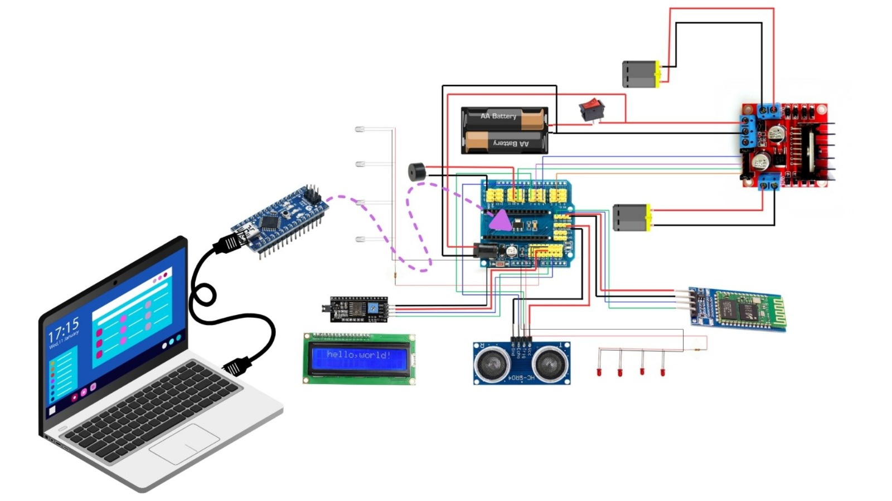

🔧 Construcción del RoboBus Nano
Paso a paso y materiales que usamos para construir el RoboBus Nano con Arduino.
📦 Materiales utilizados
- Arduino Nano
- Shield de expansión para Arduino Nano
- Sensor ultrasónico HC-SR04
- Driver de motores L298N
- Módulo Bluetooth HC-05
- Pantalla LCD 1602
- 2 Motores DC con ruedas
- Soporte de batería y pilas recargables
- Cables Dupont y UTP
- Chasis del bus (impreso o reciclado)
- Tornillos, soportes y cinta aislante
Procedimientos
En este apartado se les dará a conocer a través de un video y un diagrama como fue el paso a paso de construcción de nuestro prototipo RoboBus Nano.
🎥 Video Explicativo
Mira el siguiente video donde mostramos paso a paso el montaje del RoboBus Nano.
📸 Diagrama de montaje
